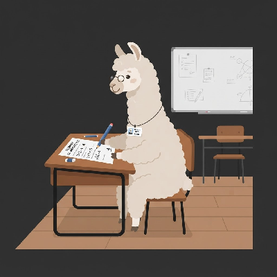
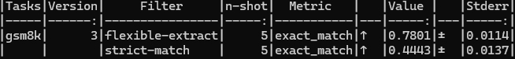
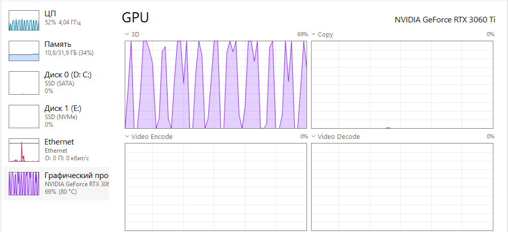

[ ЧТО ТАКОЕ БЕНЧМАРК И ЗАЧЕМ ОН НУЖЕН ]
Бенчмарк — это набор стандартных вопросов и задач, по которым можно сравнивать разные модели.
Вместо того чтобы задать 10 вопросов вручную, бенчмарк прогоняет модель через сотни и тысячи примеров и выдаёт точный процент правильных ответов.
Мы будем использовать LM-Evaluation-Harness от EleutherAI — главный инструмент для тестирования открытых моделей.
[ КАКИЕ ТЕСТЫ ЕСТЬ ВНУТРИ ]
[ ПОСТАНОВКА ЗАДАЧИ ]
Цель: Узнать объективный уровень способностей модели, чтобы принимать решения на основе данных, а не интуиции.
- Точка отсчёта (базовый уровень)
- Выявление слабых мест
- Сравнение с другими моделями
- Подтверждение гипотез
- Документирование прогресса
- Создание базы для дальнейших шагов
[ ЧТО НУЖНО ДЛЯ ЗАПУСКА ТЕСТА ]
Минимальные требования:
- Видеокарта с 6+ ГБ VRAM
- 16 ГБ оперативной памяти
- 20 ГБ свободного места на диске
Программы:
Git— для скачивания репозитория- Начало установки: Скачайте и запустите установщик с официального сайта git-scm.com..
- Выбор редактора: Здесь есть один важный момент. Vim — мощный, но сложный редактор. Рекомендую выбрать "Use the Nano editor by default" (самый простой текстовый редактор, который работает из командной строки) . Не пугайтесь, если не знаете его — в рамках начальной работы он подойдёт идеально. .
- Настройка имени ветки: Оставьте "Let Git decide" (или "Override the default" с main). Это современный стандарт, и в наших экспериментах это не играет роли.
- Самое важное: настройка PATH: Это критично, чтобы Git работал из командной строки. На экране "Adjusting your PATH environment" выберите "Git from the command line and also from 3rd-party software".
- Остальные шаги: После этого вы увидите примерно 7-8 экранов с настройками для SSH, SSL, преобразования строк, терминала и т.д. Смело нажимайте "Next" на всех этих экранах, ничего не меняя . Все значения по умолчанию подходят для 99% пользователей. .
- Конец установки: После установки закройте все открытые окна командной строки и откройте новое, чтобы изменения вступили в силу.
Введите команду
git --version. Если вы увидели номер версии, вы справились! Python 3.10+— среда выполненияOllama— с загруженной моделью (например,qwen-ru)
🪜 GIT ПОШАГОВАЯ ИНСТРУКЦИЯ(нажми, чтобы развернуть)
Вот как пройти установщик, чтобы у вас всё работало.
[ ШАГ 1: КЛОНИРУЕМ ИНСТРУМЕНТ ]
LM-Evaluation-Harness — это библиотека от EleutherAI. Именно с её помощью исследователи проверяют модели перед тем, как выложить их в открытый доступ.
Откройте терминал и выполните:
git clone --depth 1 https://github.com/EleutherAI/lm-evaluation-harness.git
cd lm-evaluation-harnessФлаг --depth 1 скачивает только последнюю версию, без всей истории — быстрее и легче.
[ ШАГ 2: СОЗДАЁМ ВИРТУАЛЬНОЕ ОКРУЖЕНИЕ ]
Виртуальное окружение изолирует Python-зависимости для этого проекта, чтобы они не конфликтовали с другими программами.
python -m venv .venv
.venv\Scripts\activate # Windows
source .venv/bin/activate # Mac/LinuxПосле активации в начале строки появится (.venv). Это значит, что всё работает.
[ ШАГ 3: УСТАНАВЛИВАЕМ БИБЛИОТЕКИ ]
Устанавливаем сам инструмент и дополнительные зависимости для работы с Hugging Face и API.
pip install -e .
pip install "lm_eval[hf,api]"pip install -e . устанавливает пакет в режиме разработки — так удобнее, если вы захотите вносить изменения в код инструмента.
[ ШАГ 4: ЗАПУСКАЕМ ТЕСТ ]
Перед запуском убедитесь, что Ollama запущен и модель загружена:
ollama listЕсли вашей модели нет в списке — загрузите её:
ollama pull "Название модели"Теперь сам тест. Команда для запуска gsm8k — теста на математические задачи:
lm_eval --model local-chat-completions --model_args model=qwen-ru^
base_url=http://localhost:11434/v1/chat/completions,num_concurrent=1,tokenized_requests=False^
--tasks gsm8k --apply_chat_template --output_path results/ --log_samples --limit 100Разбор параметров:
--model local-chat-completions— подключаемся к локальному серверу через API чата.model=qwen-ru— имя модели в Ollama (замените на свою).base_url=http://localhost:11434/v1/chat/completions— адрес сервера.num_concurrent=1— один запрос за раз (снижает нагрузку).--tasks gsm8k— выбираем тест на математику.--apply_chat_template— применяет стандартный шаблон чата.--output_path results/— папка для результатов.--log_samples— сохраняет все ответы модели (чтобы анализировать ошибки).--limit 100— берём только 100 вопросов (быстрая проверка).
Рекомендация Следите за температурой видеокарты , у меня она не превышала 84 градуса.
[ ШАГ 5: РЕЗУЛЬТАТЫ ТЕСТА ]
После завершения теста в папке results/ появятся файлы:
results_gsm8k.json— общая статистика.samples_gsm8k.json— каждый вопрос, ответ модели и правильный ответ.
В консоли вы увидите таблицу, например:

Как читать результат:
Value = 0.81— модель правильно ответила на 81% вопросов (при мягкой проверке).Filter = strict-match— строгая проверка, ответ должен совпадать дословно.- Разница между мягкой и строгой проверкой показывает, насколько модель аккуратна в формулировках.
[ МОИ РЕЗУЛЬТАТЫ ]
| Тест | Количество вопросов | Мягкая проверка | Строгая проверка |
|---|---|---|---|
| gsm8k | 1319 | 78% | 44% |
| gsm8k | 100 | 81% | 48% |
Вывод: разница между 100 и 1319 вопросами составила всего 2–4% — это означает, что 100 вопросов достаточно для быстрой оценки. Экономия времени и ресурсов — в разы.
[ ОСОБЫЙ СЛУЧАЙ: ТЕСТ НА ЧЕСТНОСТЬ ]
Тест truthfulqa проверяет, насколько модель склонна выдавать ложные факты и галлюцинировать. Это важно, если вы хотите, чтобы модель была честной.
Однако при запуске truthfulqa через чат-интерфейс возникает ошибка:
NotImplementedError: Loglikelihood is not supported for chat completions.Почему: тест требует вычисления логарифмической вероятности — метода, который не поддерживается для моделей, работающих через Ollama.
Решение: вместо truthfulqa используйте его версию с генерацией — truthfulqa_gen:
lm_eval --model local-chat-completions --model_args model=qwen-ru^
base_url=http://localhost:11434/v1/chat/completions,num_concurrent=1,tokenized_requests=False^
--tasks truthfulqa_gen --apply_chat_template --output_path results/ --log_samples --limit 100Мои результаты на truthfulqa_gen:
bleu_acc: 18%
rouge1_acc: 17%
rougeL_acc: 17%Это означает, что модель правильно отвечает примерно в 18% случаев. Для локальной 7B-модели это нормально, но потенциал для улучшения есть — через системный промт или дообучение.
[ КОНТРОЛЬ ТЕМПЕРАТУРЫ И НАГРУЗКИ ]
Во время теста видеокарта загружается на 80–100%. Температура держится в районе 83–85°C — это безопасный диапазон для современных видеокарт.
Совет:
- Следите за температурой через MSI Afterburner или GPU-Z.
- При длительных тестах обеспечьте хорошую вентиляцию корпуса.
- Если температура превышает 90°C — сделайте паузу.
На скриншоте ниже видно, как тест нагружает систему:

[ ИТОГ ]
Результаты тестов на 100 вопросов:
Математические задачи gsm8k: 81% , 48% Честность модели truthfulqa 18%
Мы прошли полный цикл тестирования:
- Установили
lm-evaluation-harness - Запустили тест на логику (
gsm8k) и на честность (truthfulqa_gen) - Получили точные цифры и поняли слабые места модели
- Доказали, что 100 вопросов достаточно для быстрой оценки
Что дальше?
- Использовать результаты как точку отсчёта
- Попробовать улучшить модель через системный промт
- Сравнить с другими моделями
- Повторить тест после дообучения